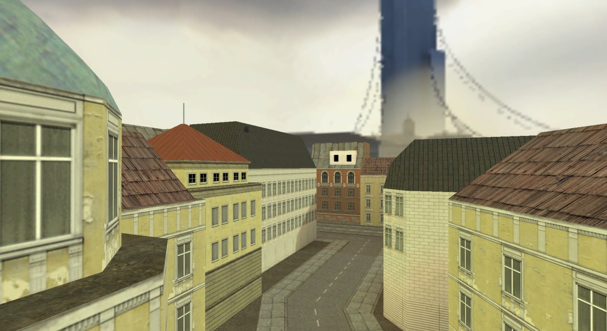

01/12/18 20:29:33 ¶ ● ⬈ lambdageneration: Black Mesa recreated Half-Life in the Source engine, but what recreating Half-Life 2 in the GoldSrc engine? Half-Life 2: Classic is an upcoming mod that does exactly that. Wow.